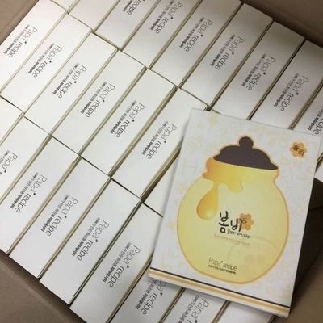
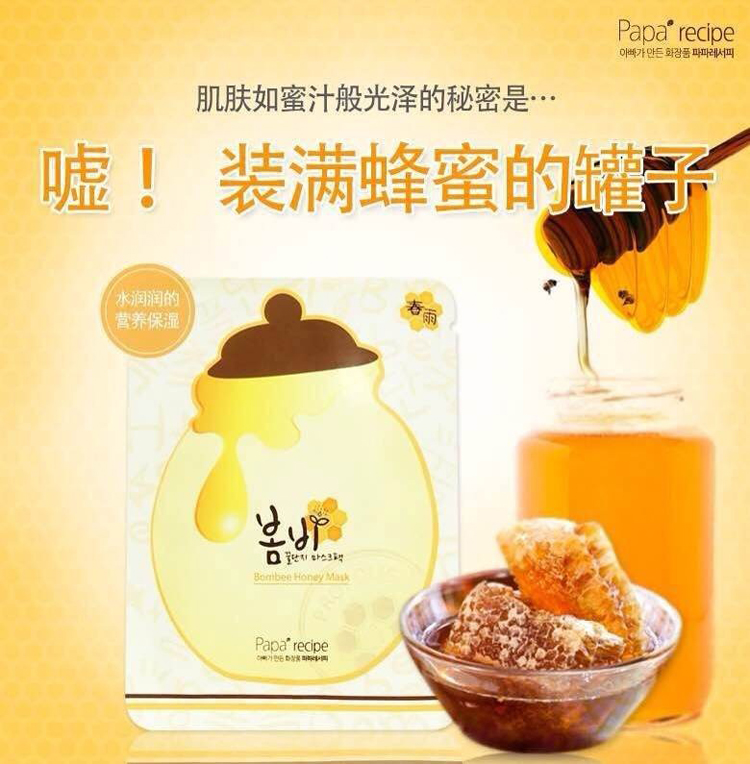
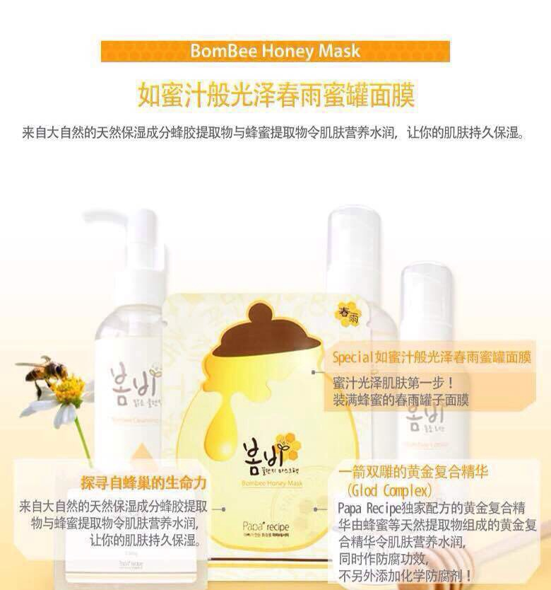
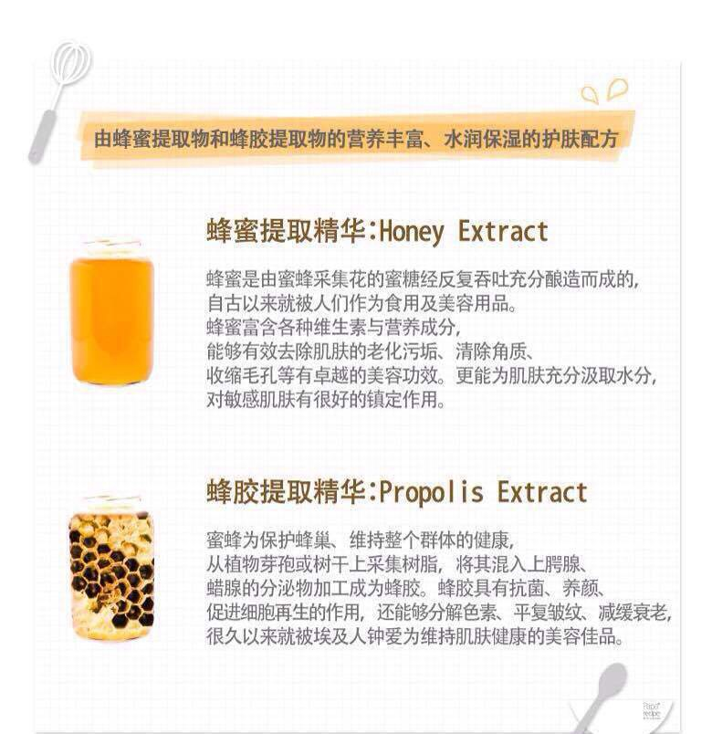
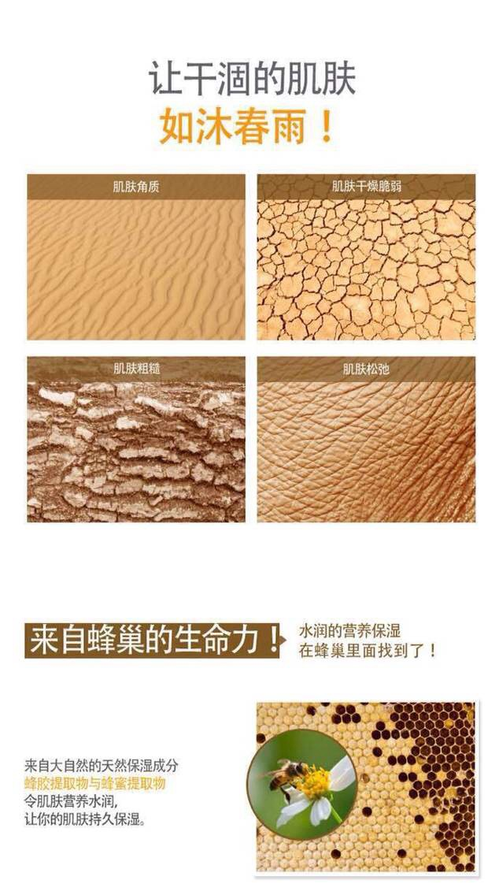
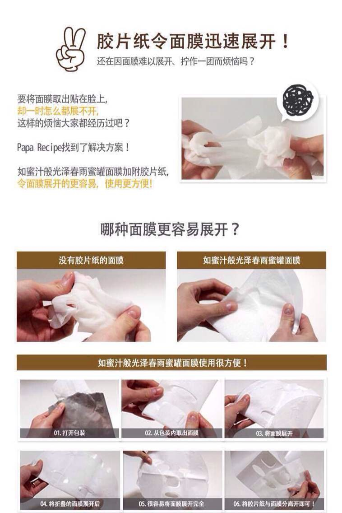
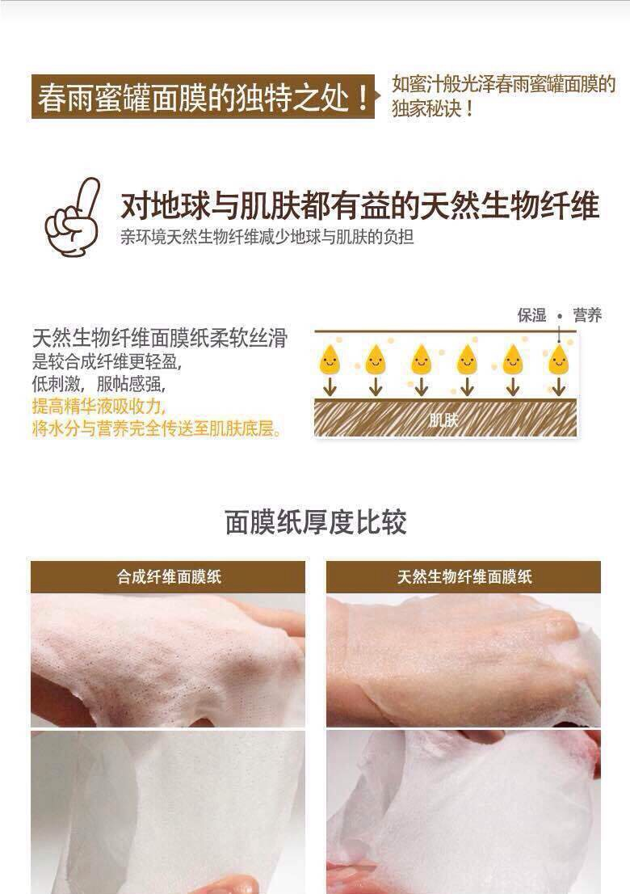
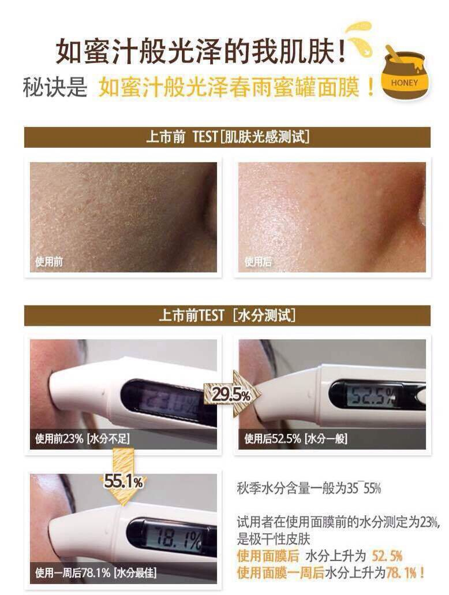

papa recipe春雨蜜罐蜂胶蚕丝面膜贴 纯天然蜂蜜补水保湿








~首先让我们来听听春雨蜜罐面膜的品牌爱心故事~
一个韩国的中央大学医药食品大学院说是在读的单身小爸爸，他自己的女儿出生以后肌肤很差、非常敏感而且引发各种过敏 红疹。在爱的驱动下 结合医院院研究生与爸爸的双重身份，kll他创立了现在的「papa recipe」。韩国的男人女人热爱护肤的程度是不分高下的。这位小爸爸原本就钻研护肤，在韩国也运营着自己有关护肤化妆的博客。多年来一直保持着高人气。起初他给小女儿研发的东西只是给好朋友，和像他一样有着这类困扰的粉丝们分享，谁知道“口碑”的力量使得他研发的产品最终供不应求……
｛papa recipe｝是由一位医生爸爸为了给自己的小女儿使用而创立的化妆品品牌
品牌主旨是推出小孩，孕妇都可以用的全天然成分制成最安全的化妆品。这款在韩国大热的面膜内含大量蜂胶和蜂蜜， 超级补水补湿，清爽不粘稠，超薄至极柔软的面膜纸，只要试用一次，就会深深爱上的面膜！ 非常非常推荐的一款面膜胜过很多的大牌，用过就会知道，厚薄适中的面膜纸，从未有过的清新味道，使用全过程都是那么的完美。其实很多面膜在用完以后都会有皮肤喝饱水的感觉，但是这款面膜的过人之处是，早上起床，皮肤依然可以很好，嫩嫩的，滑滑的，好像刚刚做完面部护理一样，这是很少面膜能达到的效果哦。 是不是听起来很心动？赶紧试试吧，春雨蜜罐面膜不会让您失望滴。
如蜜汁般光泽春雨蜜罐面膜
来自大自然的天然保湿成分蜂胶提取物与蜂蜜提取物令肌肤营养水润，让你的肌肤持久保湿。
Special如蜜汁般光泽春雨蜜罐面膜：蜜汁光泽肌肤第一步！装满蜂蜜的春雨罐子面膜
一箭双雕的黄金复合精华（Glod Complex）：Papa Recipe独家配方的黄金复合精华由蜂蜜等天然提取物组成的黄金复合精华令肌肤营养水润，同时作防腐功效，不另外添加化学防腐剂！
◦探寻自蜂巢的生命力：来自大自然的天然保湿成分蜂胶提取物与蜂蜜提取物令肌肤营养水润，让你的肌肤持久保
由蜂蜜提取物和蜂胶提取物的营养丰富、水润保湿的护肤配方
•蜂蜜提取精华：蜂蜜是由蜜蜂采集花的蜜糖经反复吞吐充分酿造而成的，自古以来就被人们作为食用及美容用品。蜂蜜富含各种维生素与营养成分，能够有效去除肌肤的老化污垢、清除角质、收缩毛孔等有卓越的美容功效。更能为肌肤充分汲取水分，对敏感肌肤有很好的镇定作用。
•蜂胶提取精华：蜜蜂为保护蜂巢、维持整个群体的健康，从植物芽孢或树干上采集树脂，将其混入上腭腺、蜡腺的分泌物加工成为蜂胶。蜂胶具有抗菌、养颜、促进细胞再生的作用，还能够分解色素、平复皱纹、减缓衰老，很久以来就被埃及人钟爱为维持肌肤健康的美容佳品。